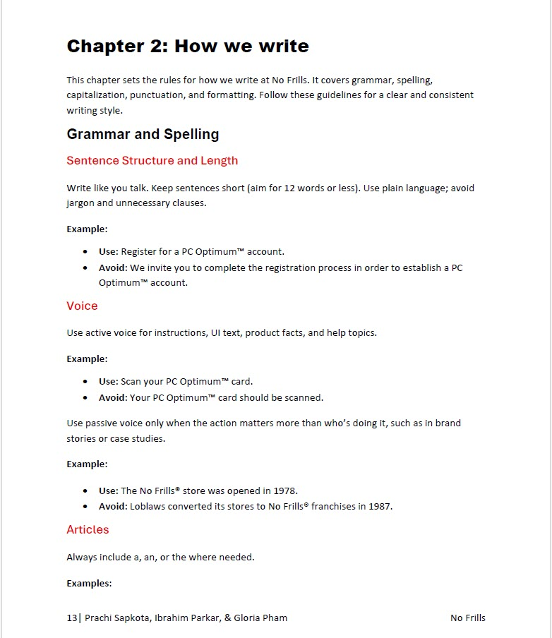

Back to Portfolio

Style Guide Documentation
This group project focused on creating a style guide for No Frills as part of an academic exercise. The goal was to practice professional style guide development, ensuring consistent tone, grammar, and formatting across written content.
Tools:
Google
Docs
Industries:
Retail
Communications
Contribution
I focused on content quality, structure, and team collaboration. Specifically, I:
- Drafted content rules for clarity, tone, and formatting.
- Structured sections to balance brand voice with usability.
- Collaborated with the team to align on a unified framework.
- Reviewed and edited for consistency across all entries.
Challenges
The main challenges included aligning on a single style framework that worked for everyone and framing content in a way that was both detailed and easy to apply.
Impact
- Delivered a practical, professional-quality style guide suitable for academic and real-world application.
- Enhanced team collaboration and decision-making skills.
- Strengthened my ability to create structured, audience-focused documentation.